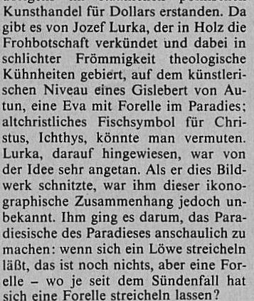

«Da gebe es zum Beispiel von Jozef Lurka, der in Holz die Frohbotschaft verkünde, dabei in schlichter Frömmigkeit theologische Kühnheiten hervorbringend, eine Eva mit Forelle im Paradies, womit Lurka aber nicht auf das altchristliche Fischsymbol für Christus habe hinweisen wollen, sondern ihm sei es darum gegangen, das Paradiesische des Paradieses anschaulich zu machen: Wenn sich ein Löwe streicheln lasse, das sei noch nichts, aber eine Forelle – wo je, seit dem Sündenfall, habe eine Forelle sich streicheln lassen?»
Quelle: Gerhard Meier. Toteninsel. Erste Auflage. Suhrkamp Verlag: Frankfurt am Main. 2007.
In charakteristisch Meierscher Collagemanier wird neben dem Anfang des Artikels immer auch dessen Schluss mit in den Romantext eingeflochten. Auch hier agiert Meier satzgetreu, lediglich das originale Verb „gebiert“ wird durch „hervorbringen“ ersetzt, dies ist wahrscheinlich dem religiösen Satzkontext geschuldet.
Auch in diesem Exzerpt werden mehrere Sätze zu einem langen Satz zusammengeführt und entsprechend eingekürzt, ohne dass die einzelnen sinnkonstituierenden Satzteile verändert werden. So wird auch der pointierte Schlusssatz unverändert übernommen und im Roman später erneut noch einmal aufgegriffen.
Linguistische Operationen
gebiert → hervorbringend